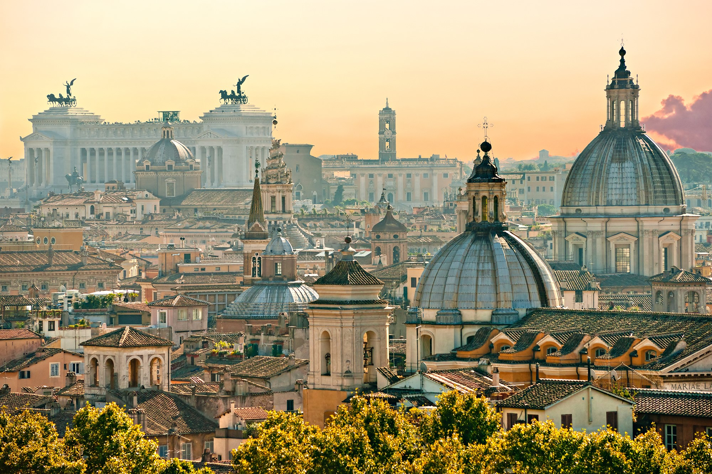
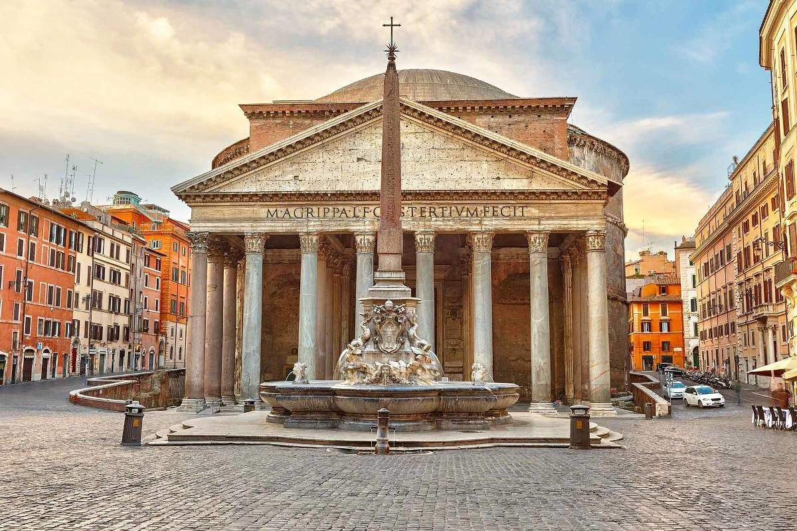
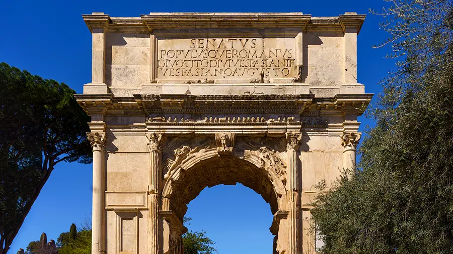
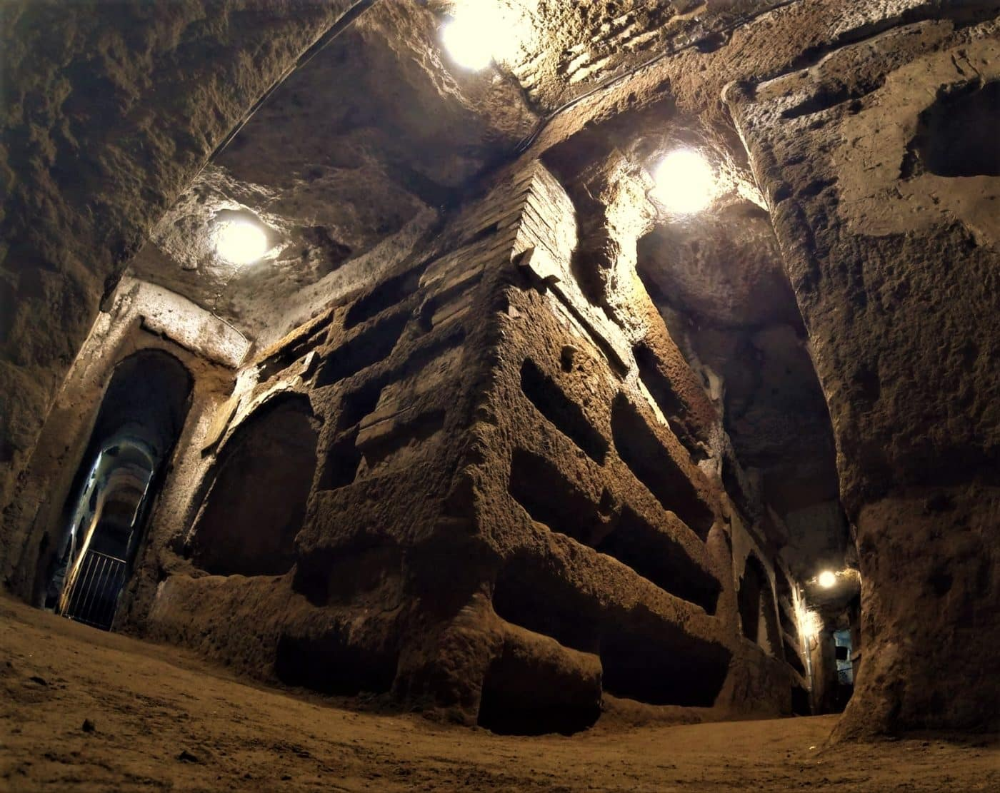
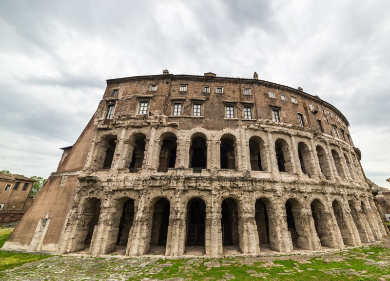

Rzym
Rzym ::: Warszawa ::: Wiedeń :::

Rzym to stolica Włoch i jedno z najstarszych miast Europy, często nazywane „Wiecznym Miastem”. Był centrum potężnego Imperium Rzymskiego, które przez wieki kształtowało kulturę, prawo i architekturę Zachodu. W Rzymie znajdują się słynne zabytki, takie jak Koloseum, Forum Romanum czy Panteon. To także siedziba papieża i centrum Kościoła katolickiego — na terenie miasta znajduje się niezależne państwo Watykan. Dziś Rzym zachwyca turystów nie tylko historią, ale także sztuką, kuchnią i wyjątkową atmosferą łączącą starożytność z nowoczesnością.
Panteon

Panteon w Rzymie to jedna z najlepiej zachowanych budowli starożytnego Imperium Rzymskiego. Został wzniesiony w II wieku n.e. za panowania cesarza Hadrian. Świątynia słynie z ogromnej kopuły z centralnym otworem (okulusem), przez który do wnętrza wpada światło. Dawniej był miejscem kultu wszystkich bogów, a dziś pełni funkcję kościoła i jest jedną z najważniejszych atrakcji turystycznych Rzymu.
Forum Romanum

Forum Romanum to najważniejszy plac starożytnego Rzymu, położony między wzgórzami Palatynem i Kapitolem. W czasach Republiki i Cesarstwa był centrum życia politycznego, religijnego i handlowego. Znajdowały się tam świątynie, bazyliki, łuki triumfalne oraz mównica, z której przemawiali rzymscy przywódcy. Dziś Forum Romanum to jedno z najważniejszych stanowisk archeologicznych we Włoszech i popularna atrakcja turystyczna.
Łuk Tytusa

Łuk Tytusa to starożytny łuk triumfalny znajdujący się w Rzymie, przy Forum Romanum. Został wzniesiony w I wieku n.e. na cześć cesarza Tytusa, aby upamiętnić jego zwycięstwo w wojnie z Żydami i zdobycie Jerozolimy. Łuk ozdobiony jest płaskorzeźbami przedstawiającymi triumfalny pochód oraz zdobyte łupy. Dziś jest jednym z najlepiej zachowanych zabytków starożytnego Rzymu.
Katakumby Świętego Kaliksta

Katakumby św. Kaliksta to jedne z najważniejszych i największych katakumb w Rzymie. Powstały w II wieku n.e. jako podziemne miejsce pochówku pierwszych chrześcijan. Spoczywało tam wielu papieży oraz męczenników. Katakumby tworzą rozległą sieć korytarzy i grobowców, które dziś są cennym zabytkiem wczesnego chrześcijaństwa i popularnym miejscem zwiedzania.
Teatr Marcellusa

Teatr Marcellusa to starożytny teatr w Rzymie, zbudowany w I wieku p.n.e. z polecenia cesarza Augusta i nazwany na cześć jego siostrzeńca, Marcellusa. Służył do wystawiania przedstawień teatralnych i mógł pomieścić około 15–20 tysięcy widzów. Do dziś zachowały się jego imponujące arkady, a budowla jest jednym z ważniejszych zabytków starożytnego Rzymu.